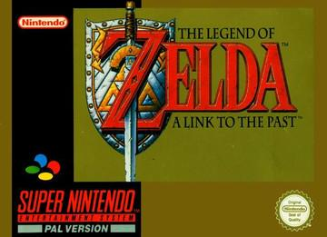

A Link to the Past verfeinerte das Top-Down-Action-Adventure-Design zu einer nahezu perfekten Essenz: ausgefeilte Dungeons, ein Parallelwelten-Konzept (Lichtwelt/Finsterwelt), präzise Items und eine dichte Erzählstruktur. Viele späteren Serienmechaniken basieren direkt auf Ideen aus diesem Spiel.
| Titel | The Legend of Zelda: A Link to the Past |
| Veröffentlichung | 21. November 1991 (JP Super Famicom) |
| Plattform | SNES |
| Entwickler | Nintendo EAD |
| Produzent | Shigeru Miyamoto |
| Komponist | Koji Kondo |
Dieses Spiel verfeinert das klassische Top-Down-Design: zwei Welten (Lichtwelt/Finsterwelt) sind miteinander verknüpft, so dass Veränderungen in einer Welt Konsequenzen in der anderen haben. Dungeons sind thematisch stark, mit klaren Rätselmotiven und Item-Pacing (z. B. Hookshot, Mirror Shield), die Spieler gezielt vor neue Herausforderungen stellen. Die Oberwelt bietet versteckte Wege, optionalen Content und ein kohärentes Karten-Layout; die Balance zwischen Erkundung und geradlinigen Zielen ist hervorragend. Technisch und narrativ bildet es eine Brücke zwischen alten 2D-Abenteuern und modernen Mechaniken: präzises Level-Design, ikonische Boss-Begegnungen und musikalische Leitmotive sorgen für starke Immersion.